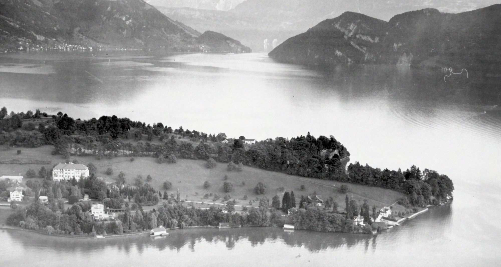
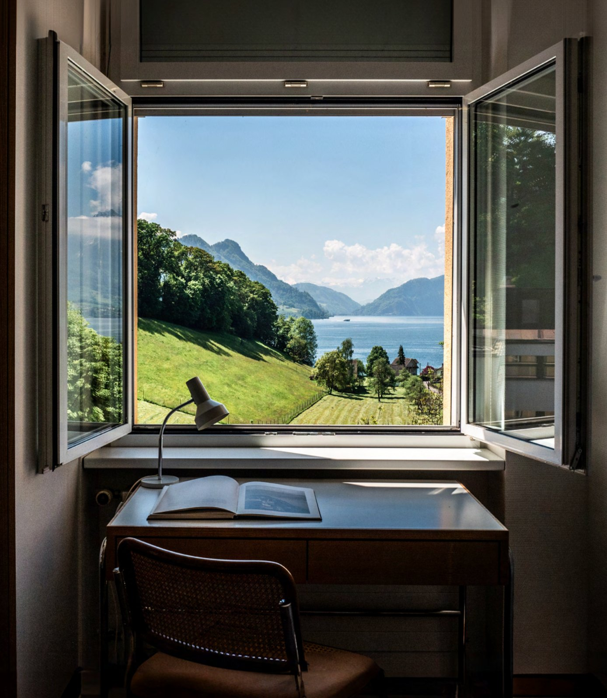

A new experimental R&D ecosystem and school set within a quiet peninsula on Lake Lucerne.
The site spent the past two centuries under the care of The Sisters of Baldegg who started the region's first school for girls and designed an experimental convent with Marcel Breuer.
We continue their legacy by engaging with discoveries across science and technology that reveal insufficiencies of existing disciplines or conceptual frames.
Stella identifies these ruptures as the necessary sites from which to build productive interventions. We partner with our ecosystem of practitioners across philosophy, art, science and technology to apply the most relevant combination of methods.
We call this philosophical R&D.